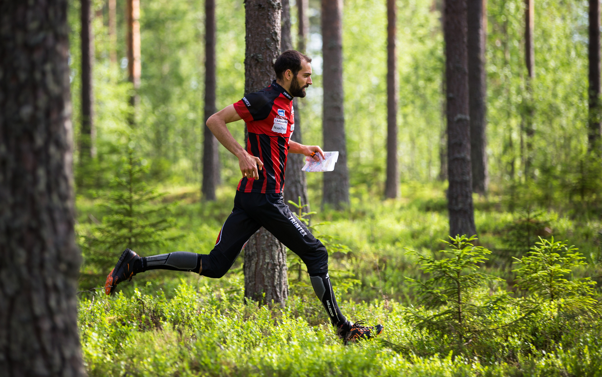
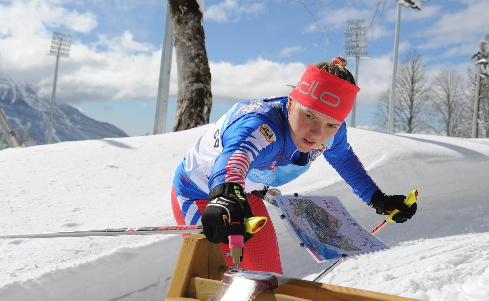
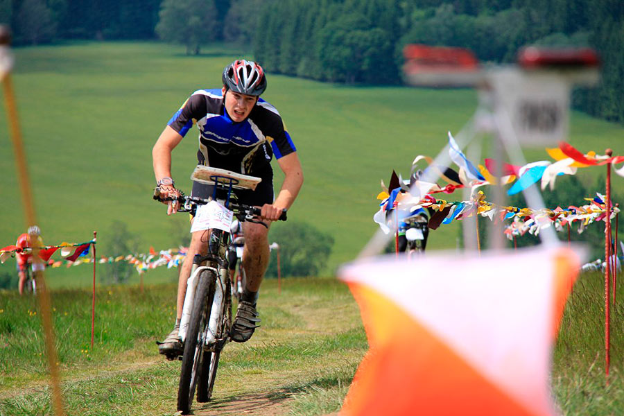
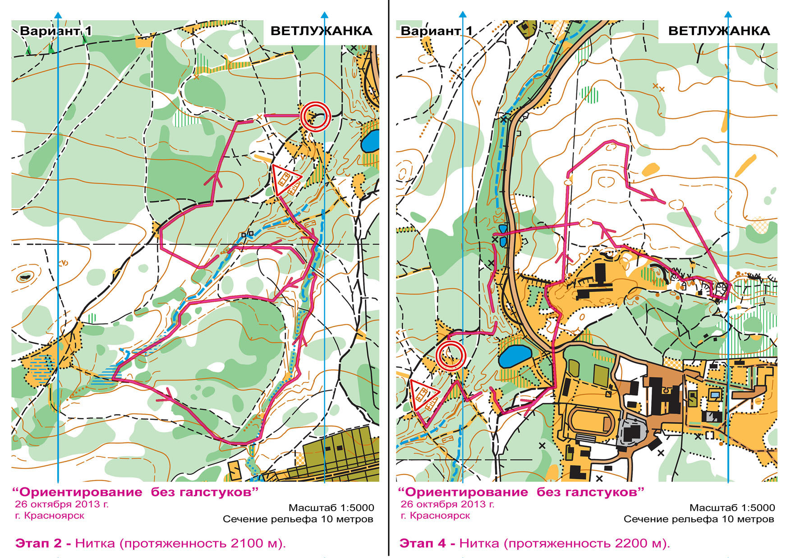
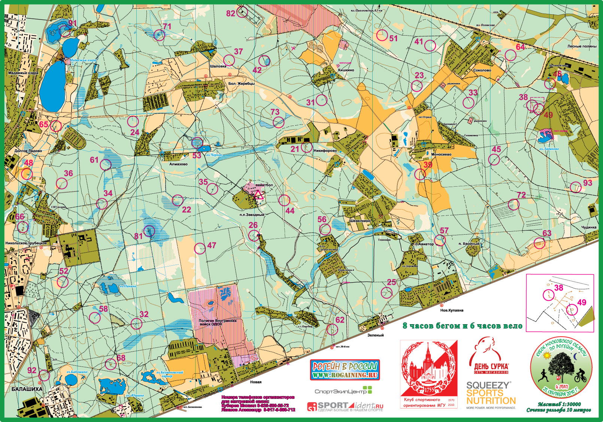

Спортивное ориентирование
Спортивное ориентирование – это активный вид спорта, в котором важны как физическая подготовка, так и недюжинный интеллект. В плане физической подготовки, тебе нужно быть выносливым и уметь быстро бегать. В то же время, тебе нужно уметь читать карту на бегу, планировать свои действия на несколько шагов вперёд, уметь обращаться с компасом, в том числе с его помощью находить азимут, и ещё многое другое. Соревнования по данному виду спорта могут происходить как в черте города, так и в лесу.
Виды спортивного ориентирования
Существует множество видов спортивного ориентирования, я расскажу о основных и самых популярных видах этого спорта.
Ориентирование бегом
Самый популярный вид. В нём спортсмены – полагаются на свои ноги. Этот вид спорта включает в себя множество дисциплин, подробнее о которых вы узнаете в следующих пунктах. С 1966 года проводятся чемпионаты мира по данному виду спорта.
Ориентирование на лыжах
Данные соревнования проводятся при условии наличия снега и на нём участники передвигаются за счёт лыж. Также на картах обозначены лыжни и их типы по развиваемой скорости. С 1975 года проводятся чемпионаты мира по данному виду спорта.
Ориентирование на велосипедах
В данном виде спорта участники передвигаются на велосипедах и на картах обозначены виды дорог (по скорости передвижения). С 2002 года проводятся чемпионаты мира по данному виду спорта.
И другие
Спортивные дисциплины
Ориентирование в заданном направлении
Особенность этого вида соревнований заключается в том, что участникам нужно добираться от старта до финиша через обязательные контрольные пункты (КП), по которым нужно идти по порядку, обозначенному в карте. Чаще всего предпоследний КП – “100”. После него идёт финишная прямая, на конце которой стоит последний КП – “Финиш”.

Ориентирование по выбору
В данной дисциплине участникам нужно сразу после получения карты добежать до первого КП, до него от старта идёт прямая линия. После чего в зависимости от группы ему нужно выбрать то или иное количество КП, к которым он подбежит и отметится. Их количество указано на карте. Дальше участник продумывает свой маршрут таким образом, чтобы быстрее всего пройти “заданное кол-во КП – 1” и побежать к последнему КП (100) и от него уже добежать до финиша.

Ориентирование на маркированной трассе
Участник двигается по отмеченной на карте области и ищет КП, которое принадлежит данной области, но не отмечен на карте. Когда участник находит КП он либо отмечает его на карте, либо прикладывает специальный чип к считывающей машинке над КП, которая отмечает, что участник был на данном КП.
Рогейн
Ориентирование, которое может длиться несколько часов или даже суток. Участники должны найти как можно больше контрольных пунктов, в произвольном порядке.
Также бывают
- Индивидуальные забеги, эстафеты (по количеству участников)
- Дневные и ночные (вермя суток, в которое проводится соревнование)
- Личные, командные (по начислению очков за результат)
Источники фотографий:
- “Ориентирование без галстуков 2013”
- “Московский рогейн”
- “Спортивное ориентирование. Тренировки”
- “Официальный сайт III зимних Всемирных военных игр”
- “Люберцы.рф”
Заинтересовывались, но нужно больше узнать, тогда предлагаю вам другие рублики с моего сайта:
Если ты живёшь в СПб, то я для тебя собрал список организаций, находящихся в твоём городе, они лежат тут: “Клубы СПб”